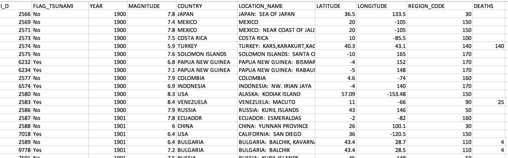
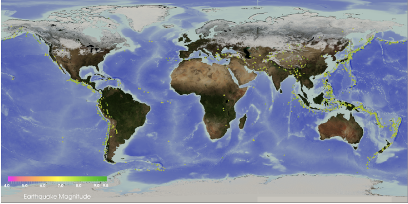
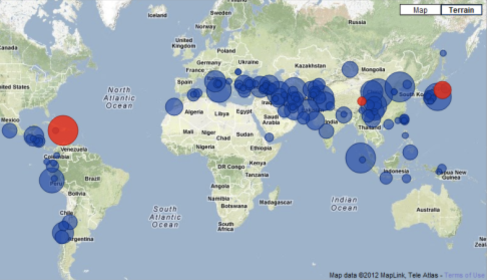

For our third Mini Project we decided to use the Earthquakes dataset found on Global Significant Earthquake Database from 2150BC. The goal of this project is to discover some interesting facts about earthquakes as to where they usually occur in terms of countries and continents, the average of the magnitudes, and potential correlations between depth, magnitude and intensity etc. We believe that this type of opportunity presents an excellent way for us to explore a compelling topic such as this and educate ourselves through analyzing and graphing the corresponding data on certain aspects of earthquake that we would not have known otherwise.
The dataset includes data from 2150 BC to 2020, and some of the variables include the time, location, magnitude, intensity, and depth. In our analysis we decided to focus in the most recent years, meaning from 1900 to 2020. A screenshot of our data is included below.
First, we performed explanatory analysis on the data by formulating questions like which countries have the biggest magnitude earthquakes, which countries have the most earthquakes, and what years did the most earthquakes occur.
To answer these questions we first thought of creating a world map. One idea was to create a map which would be colored in with colors indicating the total number of earthquakes in the country throughout the years in the dataset. The visualization would like something like the visualization below. The second idea for a map visualization was to include bubbles, that idicate the intensity of the earthquakes in that country, that however should be done for evey year. Darker colors represent earthquakes with a larger magnitude, lighter ones with smaller magnitude, and white ones with minimum magnitude. Both visualizations are shown below.
 Finally, we want to explore the relationship between the earthquake’s magnitude and the number of deaths. Additionally, we included colors to indicate the depth of earthquakes. A very basic plot depicted underneath has already shown some intriguing results. As a final note, we are also looking forward to try and implement cross-filter interactive views so that viewers could see the change in one plot being reflected on all other plots instantly.
The workload was equally distributed to all team members. Initially, we all met up and discussed the data we found and what kind of interactive visualizations we could create with them. After we started all working together on the actual visualizations. Mark focused on the Map and how to make the map interactive. Jefferey focused on the scatter plot, and making it interactive with the map, and Evi focused on the bar graph and the about page. Lastly, we all collaborated for the design of our final website.